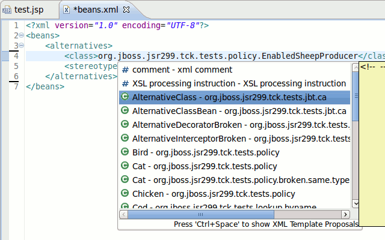
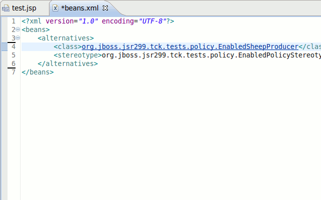
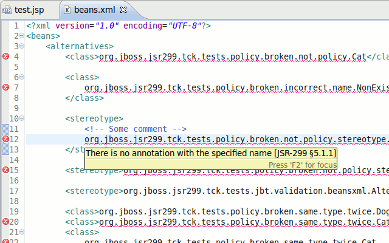
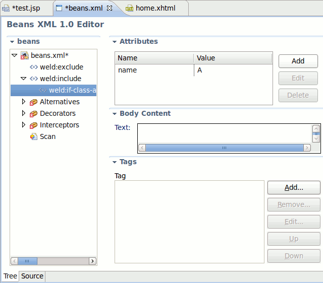
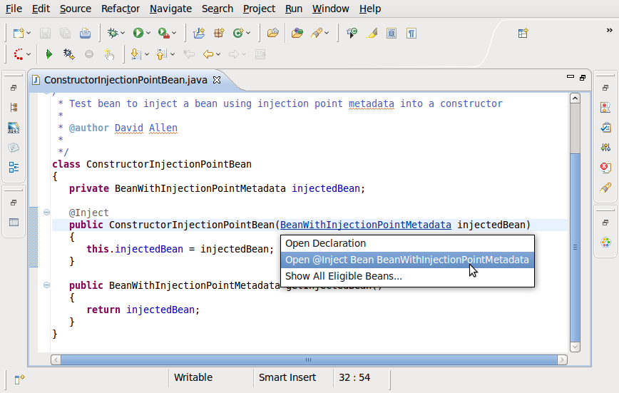
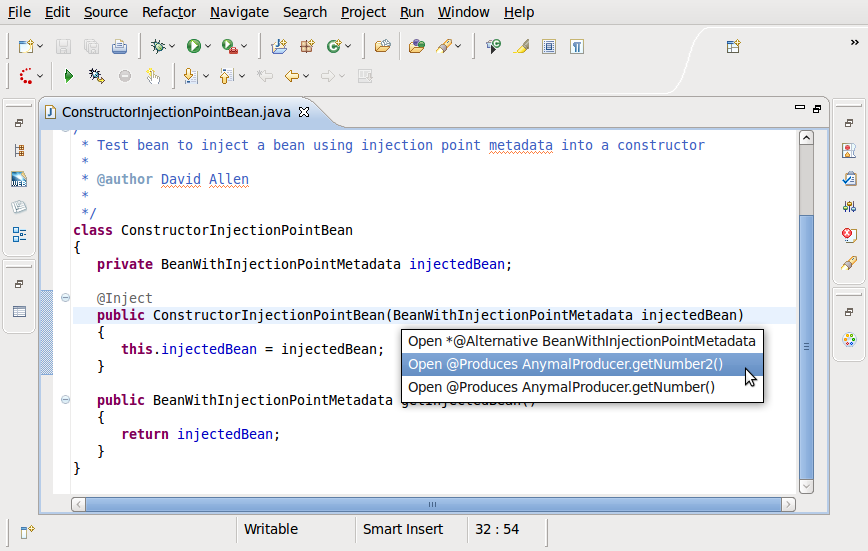

< Main Index Seam Tools News >
Beans.xml Source Editor |
|
|
Code Completion |
Now CDI Tools provide code completion for the relevant types/annotations in beans.xml  |
|
Hyperlinks (OpenOns) |
Class/Annotation names can now be navigated to via OpenOn.  |
|
Validation |
All the classes/annotation names are now validated.  |
|
Weld extension (beans_1_1.xsd) |
Weld extension (beans_1_1.xsd) is now supported by beans.xml editor.  |
OpenOn for Injected Class |
|
|
OpenOn for Injected Class. |
OpenOn menu for injection points now gives more information about eligible beans.  |
|
|
|